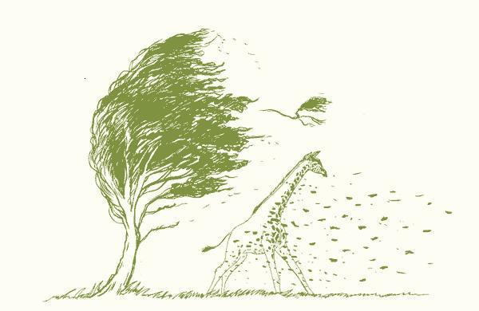

/* 遇见不同.简而不凡 */
/* 爱一个女人 */
爱一个女人一生，
意味着你要去爱一个少女、一个少妇、一个忙忙碌碌的中年妇女，
以及一个唠唠叨叨的老太太。
/* 情诗？ */
你说你喜欢风，风承载着你的梦。 于是我在每一次，柳叶飘零的定格。 拾起片刻的孤独，攥在手中。 趟过泥泞的小路，等候在高高的山谷
捕捉风起的时候，让这孤独的风。 拍打着海岸，扬起一阵浪的翻腾。 让这散落的浪潮，撞击着我的灵魂。 让我的灵魂，为你弹奏出梦的音符
你说你喜欢风，风中有你的放纵。 于是我在每一次，百花绽放的时刻。 寻一枚无名的花朵，藏进风中。 带它飘过湍急的险滩，飘过雪域高原
在每一个角落收集着，你遗失的感动。 花儿无名也无香，却满载旅人的芳华。 只愿温柔你眼中，凛冽沧桑的目光。 只愿可以陪你追逐，每一场风的脚步
看，起风了。 你在风中起舞，播洒着你的梦。 而我的梦，早已被花瓣割破。 从此，你便是我的梦
/* 爸爸的背，让我什么都不怕 */
1.
你是他世界的全部，
他只是你世界的一部分，
他却无悔。
2.
从一开始，
就注定不平等，
一个一味付出，一个只懂接受。
3.
最怕的，
是你眼中的泪光，
明明很难过，却从不言语。
4.
心疼你强忍的坚强，
心疼你故作的笑容，
你别逞强，我心疼。
5.
想念你描述家的未来，
想念你总是哄我的承诺，
但，最想的，是你。
6.
你说，孩子是吸血虫，
可我知道，你是心甘情愿，
用自己的心血，滋养着孩子。
7.
风筝飞的那么远，
却不知道，
总有牵挂它的那个人。
8.
唯一一次见你哭，
是姐姐和姐夫离开家，
你说舍不得。
9.
第一次见你魂不守舍，
是姐姐的婚礼，
你没有哭。
10.
最残忍的是，
我这么想你，
你却不知道。
Design in 2016 mid autumn Festival. © Yoio